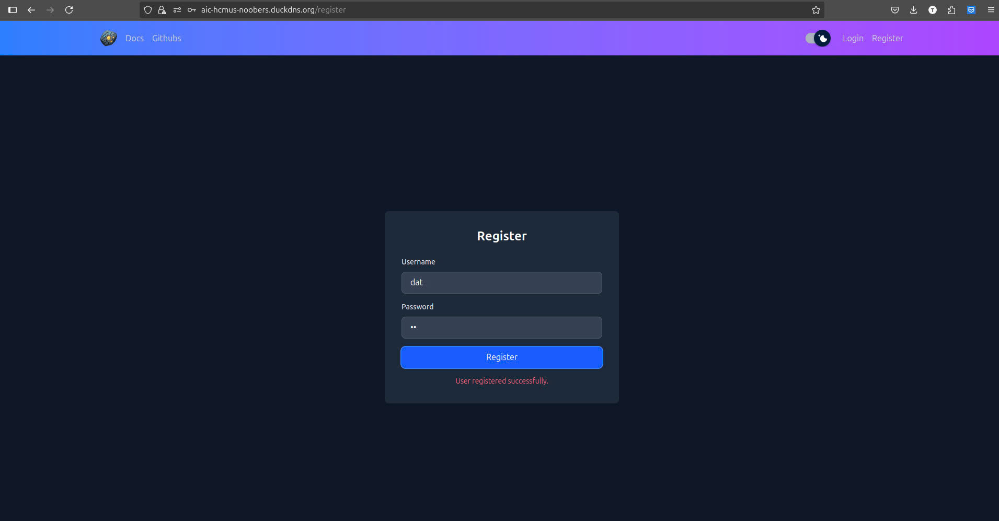
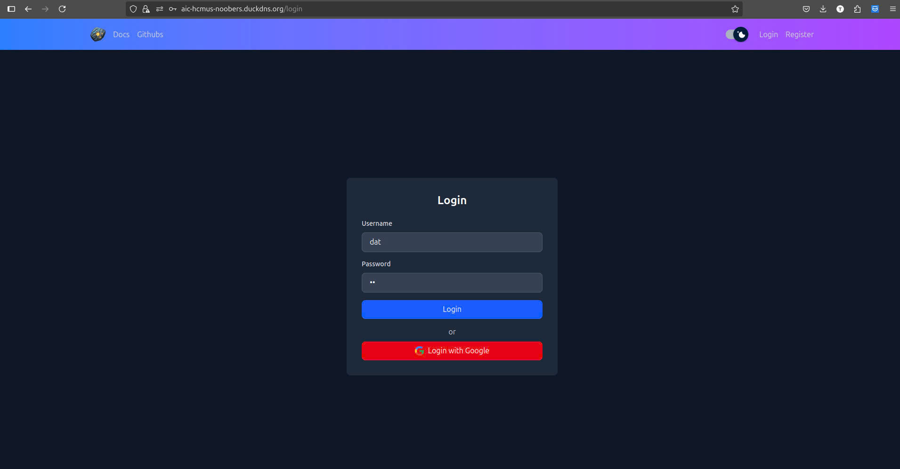
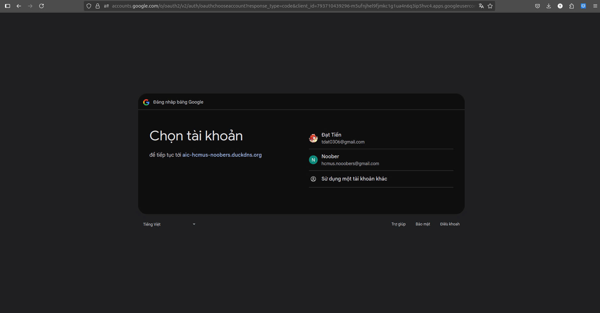
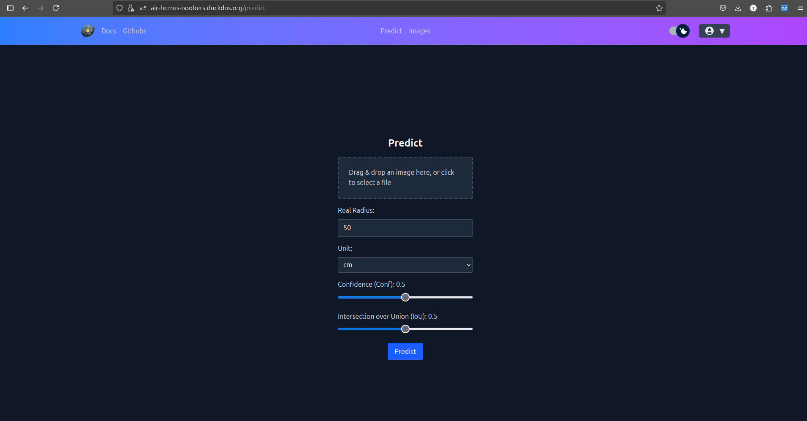
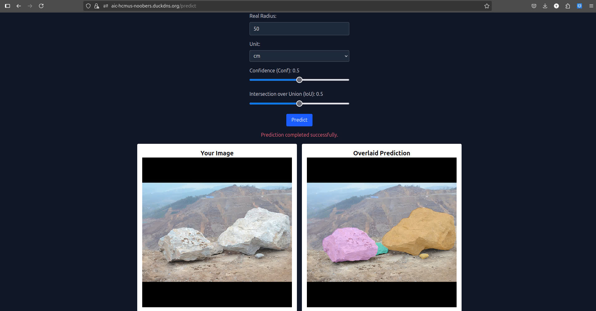
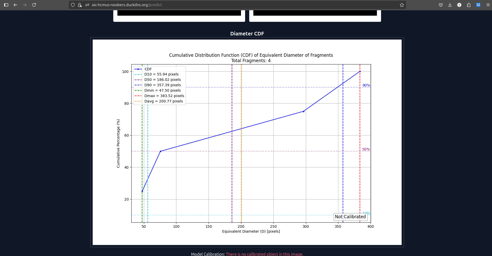
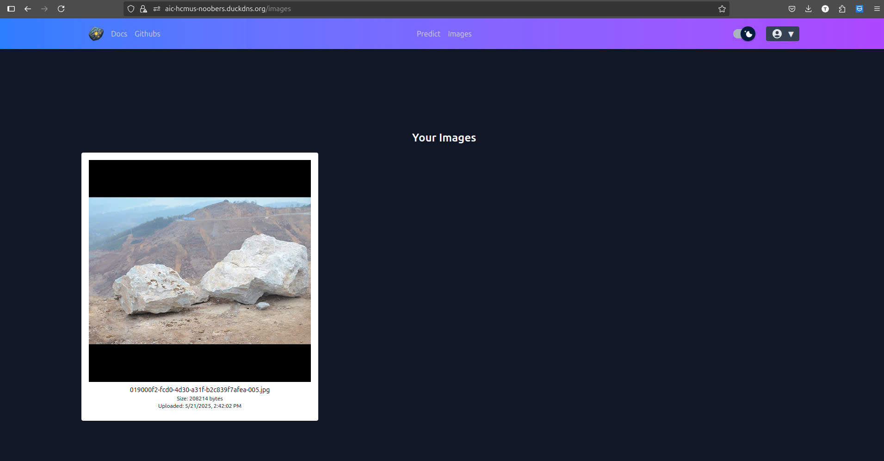
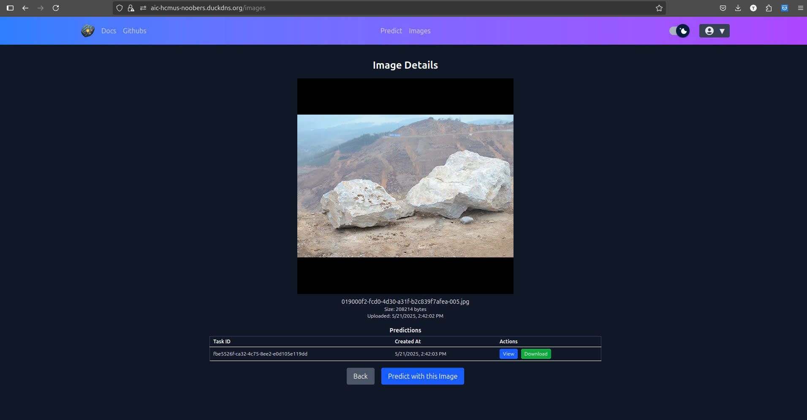

Hướng Dẫn Sử Dụng
Hướng dẫn này giải thích cách sử dụng ứng dụng Phân Đoạn Mảnh Vỡ AIC-HCMUS, từ cài đặt đến dự đoán.
1. Yêu Cầu Trước
- Đã cài đặt Docker và Docker Compose
- Trình duyệt web hiện đại (cho giao diện frontend)
- (Tùy chọn) Python 3.10+ và Node.js
2. Khởi Động Ứng Dụng
Sử Dụng Docker Compose
- Clone mã nguồn:
-
Generate a self-signed SSL certificate (openssl is required):
-
Khởi động tất cả các dịch vụ:
-
Truy cập giao diện frontend tại http://localhost:443
3. Các Tính Năng Ứng Dụng
Đăng Ký
- Mở ứng dụng web.
- Nhấn nút đăng ký để chuyển đến trang đăng ký.
- Nhập tên người dùng và mật khẩu của bạn.
- Trang sẽ tự động chuyển hướng đến trang mặc định.

2. Đăng Nhập
2.1. Đăng Nhập Thủ Công

2.2. Đăng Nhập Bằng Google

3. Tải Ảnh Lên và Dự Đoán
- Sau khi đăng nhập vào ứng dụng, chuyển đến tab dự đoán. 
- Tải lên một tệp ảnh (ví dụ: ảnh mảnh vỡ).
- Điều chỉnh các giá trị bán kính thực, đơn vị, độ tin cậy (conf), hoặc Intersection over Union (iou) nếu cần.
- Gửi để nhận kết quả phân đoạn.
 
4. Xem Ảnh Đã Tải Lên
- Tab ảnh chứa tất cả các ảnh đã tải lên của người dùng. 
- Nhấn vào từng ảnh để xem chi tiết của ảnh. 
- Sử dụng nút xem để xem chi tiết dự đoán và nút tải xuống để tải các tệp kết quả.
Để được hỗ trợ thêm, xem trang Giới Thiệu hoặc tạo issue trên GitHub.